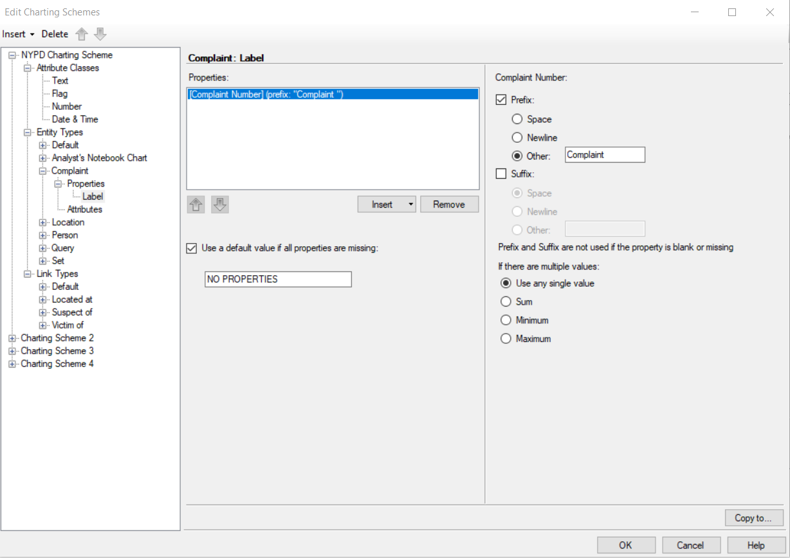
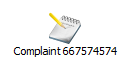
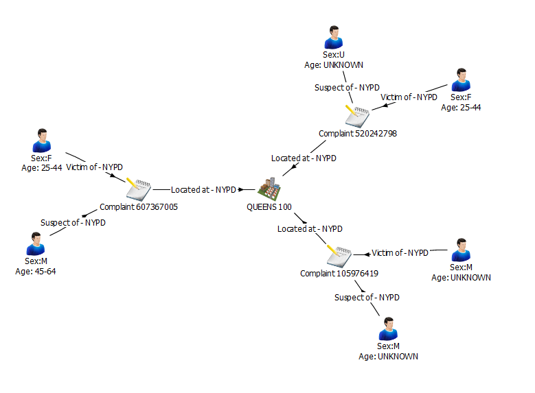
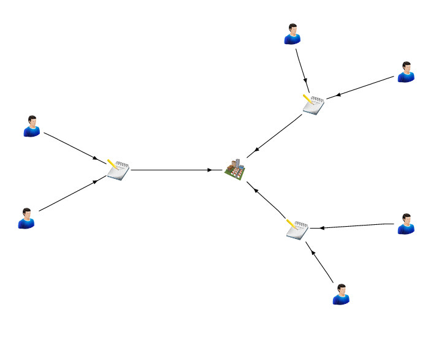
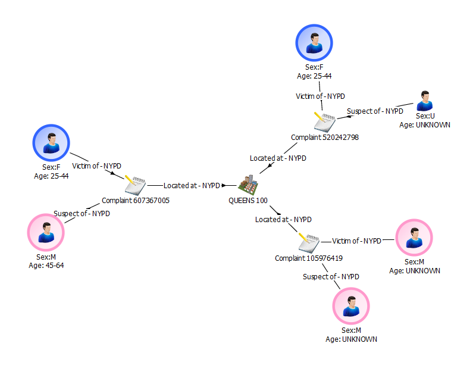

Designing an i2 Analyze schema
i2 Analyze schemas are at the core of any i2 Analyze deployment. They define the types of entities, links, and properties that users can view and analyze in Analyst's Notebook Premium. This section guides you through the process of developing a schema that aligns with the data the connector will retrieve.
The process of developing a schema is iterative. Schema design requires fine tuning, especially if you are unfamiliar with the data set that you are creating the schema for. After you deploy i2 Analyze, you will be able to experiment with and test the schema you create. You can refer back to this document to repeat the process until you have a schema that you believe represents the NYPD Complaint Dataset.
If you already understand the schema development process, you can use the example schema from this repository.
Prerequisites
Before you start, ensure that you have installed Analyst's Notebook Premium with the i2 Analyze Schema Designer.
The i2 Analyze schema
There are three integral components of an i2 Analyze schema:
Entity types. These represent real-world concepts such as person, location, bank account, or event ("meeting", for example).
Link types. A link type describes a relationship between two entity types, such as a person's ownership of a vehicle or a transaction between two bank accounts. Link types can specify exactly which entity types can appear at their ends, or they can represent a general association between entities of any types. A link between entities on a chart is represented by a line between them, which will be an arrow if the link is directed.
Property types. Entities and links have properties, which store information about the object, event, or relationship. For example, a person might have a name, date of birth, and eye color; while a meeting might have a date, a time, and a duration. The property types of an entity or link type define exactly what properties the records of that type can have.
Getting to know the data
The data that your connector will retrieve comes from the NYPD Complaint Dataset. Before you build your schema, you should explore the data and decide how to model it as entities, links, and properties. You can also consult the data API and look at the raw data if you want to.
Creating the schema
Open i2 Analyze Schema Designer. From the File menu, click New Schema.
Adding entity types
You need to create entity types that can represent different objects.
These types will relate to the supplied NYPD Complaint Dataset, and you can
decide what they will be. One example of an entity type used in the sample
schema is a Complaint. You can follow the instructions below to simulate
creating the example schema with this entity type, or you can create your own
types.
- From the Insert menu, click New Entity Type.
- Enter a name and a description for the entity type. (For example, Name: Complaint, Description: "A complaint regarding an incident that occurred between some individuals".)
- Select an icon to represent entities of this type in Analyst's Notebook Premium. (For example, a notepad.)
You can create any entity types you like, provided that they align with the data. For example, you could have entity types to represent people and locations. Look at the example schema for inspiration if you need to.
Adding property types to entity types
For the entity types that you created, decide which fields in the data provide
information that can be stored in properties. To continue with the Complaint
example, some property types that might be suitable include:
- Complaint Number
- Complaint Start Date
- Complaint End Date
- Level of Offense
- Offense Description
These property types are valuable because they allow for additional analysis to occur in Analyst's Notebook Premium. They provide the opportunity to conduct live formatting on the data, as well as to create different charting schemes for when data needs to be displayed in a different fashion. This is explained in more detail in Creating a charting scheme, below.
To add a property type to an entity type:
- Select the entity type in the navigation tree.
- From the Insert menu, click New Property Type.
- Enter a name and a description for the new property type. (For example, Name: Complaint Number, Description: "Persistent ID for each complaint".)
- Assign a logical type that describes the type of data that properties of this type will contain. (For example, Integer.)
- Select the Is Mandatory checkbox if you want to enforce that all entities of this type have a property of this type.
Adding link types
Decide how the entity types you have created can be related. An example of a link type in the supplied schema is Located At. You can follow the instructions below to simulate creating the example schema with this link type, or you can create your own link types:
- From the Insert menu, click New Link Type.
- Enter a name and a description for the link type. (For example, Name: Located At, Description: "Where the incident was located".)
- Links often make sense only between certain entity types. To choose which entities can be connected by a link of this type, open the Link Ends tab and select the appropriate From End Types and To End Types. (For example, From End: Complaint, To End: Location.)
Define as many link types as you like, ensuring that they align with the data.
For example, a person might be linked to a complaint if they are listed as the
victim in the complaint. You might therefore have a Victim In link type that
connects Person entities to Complaint entities. Similarly, you might define a
a Suspect In link type.
Adding property types to link types
For the link types that you have created, decide if there are fields in the data set that can provide properties for them. The example schema contains no links with properties, and you can complete the demonstration without them, but they might be useful for the connectors that you make after following this guide. To add a property type to a link type:
- Select the link type in the navigation tree.
- From the Insert menu, click New Property Type.
- Enter a name and a description for the new property type.
- Assign a logical type that describes the type of data that properties of this type will contain. For example, Single Line String or Integer.
- Select the Is Mandatory checkbox if you want to enforce that all links have a property of this type.
Adding semantic types
Entity types, link types, and property types can all have semantic types that provide a connection between the model that your schema represents, and its meaning in the real world.
For example, you might have entity types in your schema called Car and Truck. By giving them both the semantic type "Vehicle", you create an association between Car records and Truck records - that they are the same kind of thing - that would not otherwise be present in the model.
Similarly, a Person might have an SSN property type, while a Car (or a Truck) might have a License Plate property type. Both of those are fundamentally identifiers, and you can represent that by giving them both an "Identifier" semantic type.
Adding semantic types to the entity, link, and property types in your schema improves the analysis that client applications can perform. You can also take this semantic information into account in the connectors that you create.
i2 provides a standard library of semantic types that you can assign to the types in your schema:
In Schema Designer, for each type, find the Semantic Type field and click Select to open the Select Semantic Type dialog.
Use the tabs in the dialog to browse the library and understand the relationships between the semantic types that it contains.
When you've found a semantic type that fits your entity, link, or property type, click Assign to add it to the schema.
For more information about semantic types and the i2 Semantic Type Library, see the section on Assigning semantic types in the Schema Designer documentation.
Creating a charting scheme
When you have defined all the entity, link, and property types you want to model, you must create a charting scheme to determine how items that contain your entity and link records appear in Analyst's Notebook Premium. For example, the charting scheme determines how labels on the chart are generated from properties of entities and links.
To create a charting scheme:
- From the File menu, click Edit Charting Schemes.
- Expand the first charting scheme in the left panel to reveal Entity Types and Link Types.
- Expand Entity Types and Link Types to reveal the entity and link types that you created earlier.
- Right-click Properties and select Insert Chart Item Property Type". From the dropdown, select Label.
In the Label tab, set the text to be displayed with entities of this type in Analyst's Notebook Premium to distinguish them on the chart.
You can use the values of properties assigned to a record to construct your label. To use a property value, click the downward arrow on the Insert button and select the property type of your choice. In the example charting scheme, the Complaint Number is used in the label of Complaint entities.
You can prefix the value of a property with a space, a newline, or some custom text. The prefix can clarify what data is represented in the label. For example, a Complaint Number might be prefixed with the text "Complaint ". This is displayed in Schema Designer as follows:

A Complaint with the Complaint Number 667574574 will then be displayed in Analyst's Notebook Premium like this:
 You can also add a suffix in the same way, which can be useful if you use multiple property values in the label. For example, you might display values on separate lines, or with spaces between them. For example, Person entities in the example are shown as follows:
You can also set a default value to use when propert values are not set. In this case, the default value is "NO PROPERTIES".
This range of options allows you to customize your charting scheme in a way that best represents your data. To combine multiple properties into a single label, follow the above process again.
You can add more charting schemes to visualize the data in different ways. The supplied example schema contains two charting schemes - one with labels (detailed version) and one without labels (simplified version). To create further charting schemes, repeat the above instructions with different (or no) labels.
A group of entities and links with a detailed charting scheme might look like this:

This charting scheme provides a substantial amount of information to the analyst, allowing them to see details of their entities and links at a glance. However, there might be times when this much information is overwhelming, especially in a chart with lots of records. For such cases, you might use a simpler charting scheme that just gives an overview of data in the records. A group of entities and links with a simplified charting scheme might look like this:

- When you have finished making your changes, click OK to close the charting scheme editor.
See the i2 product documentation for information about adding property types that are not used in the example schema.
Link summarizations
Sometimes, multiple links exist between the same two entities on a chart in Analyst's Notebook Premium. You can use the charting scheme to choose how to represent these links. The different link summarizations that you can use are:
| Link Option | Description |
|---|---|
| Single Link | All links of the selected type between the same two entities are combined into a single link. This option is useful if you are producing a summary chart and do not want to show all the detail of the data between entities. |
| Directed | All links of the selected type in the same direction between the same two entities are combined. This option is useful if you are charting information such as telephone calls or transactions. |
| Multiple | Each link of the selected type between the same two entities is charted separately. This option is useful if you want to show all the detail. If there are many links, you might make the chart cluttered or hard to read. |
| Flow | All links of the selected type between the same two entities are combined into a single, directed link. The direction (or flow) is determined from a property that you specify. For example, if there are several financial transactions between two bank accounts, this option is useful to determine the direction that the aggregate amount of the money is flowing. |
The example schema uses link multiplicity (Multiple) to show all the data flowing to and from entities. If you want to change this setting, this is the time to do so! You are likely to use other settings in your own connectors.
Live Formatting in Analyst's Notebook Premium
Live formatting in Analyst's Notebook Premium is a type of Conditional Formatting that changes the appearance of chart items, by applying conditional formatting specifications in real time. This allows analysts to format their charts to their own specifications. The default appearance of chart items is defined by your schema, but Live Formatting extends this to provide for filtering and quick, real time insight. An example of this functionality in action with the example schema is with the Sex property of the Person entity. Live Formatting allows for quick, visual confirmation of whether a Person is a Male or a Female (pink for Male, blue for Female). This example can be seen as follows.

If you wish to know more about Live Formatting, including information regarding its setup, how to define a specification, and formatting system messages, you can visit the i2 product documentation.
Saving the schema
- From the File menu, click Save Schema.
- Choose a location to save your schema, then click Save.
The schema and charting schemes will both be saved in your chose location as XML files.
Now that you have defined your schema, you need to deploy i2 Analyze.